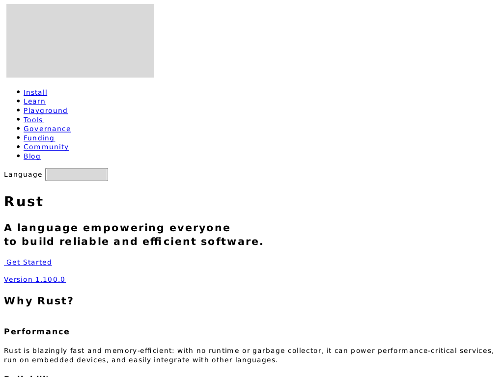

display_items = 0), avisos de imagen/layout o
errores de consola (console_errors > 0) marcan el sitio como DEGRADADO aunque el
pipeline haya terminado sin error. Las capturas son PNG reales
producidos por render. Para medir cobertura de capacidades, ver
coverage.html.
| Sitio | Resultado | display_items | Tiempo | Avisos | console_errors | Issue | Captura |
|---|---|---|---|---|---|---|---|
| example.com | DEGRADADO | 5 | 1486.2 ms | skipping script file:///s.js: file not found: /s.js | 0 | — |  |
| rust-lang.org | DEGRADADO | 318 | 771.0 ms | skipping script file:///static/scripts/highlight.pack.js: file not found: /static/scripts/highlight.pack.js skipping script file:///static/scripts/init.js: file not found: /static/scripts/init.js skipping script file:///static/scripts/languages.js: file not found: /static/scripts/languages.js skipping stylesheet file:///static/styles/a11y-dark.css: file not found: /static/styles/a11y-dark.css | 0 | — |  |
| es.wikipedia.org/wiki/Rust | DEGRADADO | 390 | 3319.6 ms | skipping script file:///w/load.php?lang=es&modules=startup&only=scripts&raw=1&skin=vector-2022: file not found: /w/load.php skipping stylesheet file:///w/load.php?lang=es&modules=ext.readingLists.bookmark.icons%2Cstyles%7Cext.uls.interlanguage%7Cext.visualEditor.desktopArticleTarget.noscript%7Cext.wikimediamessages.styles%7Cskins.vector.icons%2Cstyles%7Cskins.vector.search.codex.styles%7Cwikibase.client.init&only=styles&skin=vector-2022: file not found: /w/load.php skipping stylesheet file:///w/load.php?lang=es&modules=ext.gadget.imagenesinfobox&only=styles&skin=vector-2022: file not found: /w/load.php skipping stylesheet file:///w/load.php?lang=es&modules=site.styles&only=styles&skin=vector-2022: file not found: /w/load.php | 0 | #1013 |  |
| news.ycombinator.com | DEGRADADO | 621 | 2201.2 ms | skipping script file:///home/jp/Escritorio/Proyectos/Megi-auto-site-corpus/tests/fixtures/real-sites/hn.js?OCEzWKluI4lq0wVh0aql: file not found: /home/jp/Escritorio/Proyectos/Megi-auto-site-corpus/tests/fixtures/real-sites/hn.js skipping stylesheet file:///home/jp/Escritorio/Proyectos/Megi-auto-site-corpus/tests/fixtures/real-sites/news.css?OCEzWKluI4lq0wVh0aql: file not found: /home/jp/Escritorio/Proyectos/Megi-auto-site-corpus/tests/fixtures/real-sites/news.css skipping image file:///home/jp/Escritorio/Proyectos/Megi-auto-site-corpus/tests/fixtures/real-sites/y18.svg: file not found: /home/jp/Escritorio/Proyectos/Megi-auto-site-corpus/tests/fixtures/real-sites/y18.svg skipping image file:///home/jp/Escritorio/Proyectos/Megi-auto-site-corpus/tests/fixtures/real-sites/s.gif: file not found: /home/jp/Escritorio/Proyectos/Megi-auto-site-corpus/tests/fixtures/real-sites/s.gif | 0 | #1011 |  |